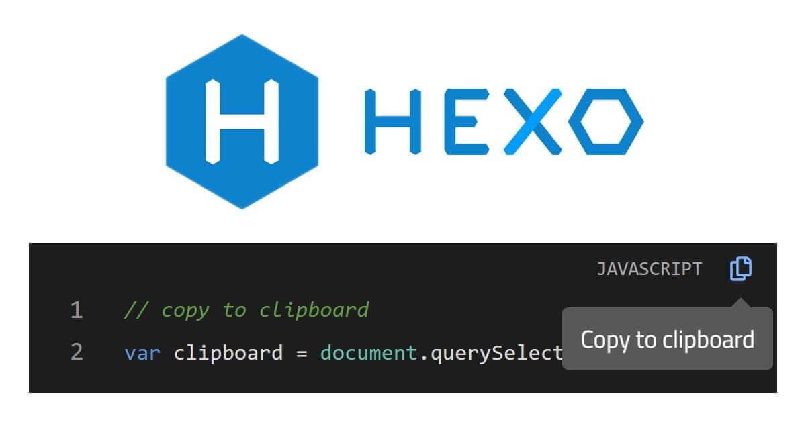
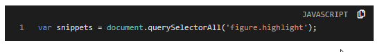

為了提高 blog 的使用體驗，本文將說明如何在 Hexo 主題內，提供程式碼片段複製至剪貼簿的功能。
1 | |
載入 clipboard.js
在 themes\material-flow\layout\_partial\scripts.ejs 檔案內的載入 clipboard.js：
1 | |
新增程式碼片段複製功能
每個程式碼片段內都要新增複製功能按鈕，下面說明新增複製按鈕的處理邏輯：
- 首先要找到所有程式碼區塊：
1 | |
- 準備要新增的按鈕結構：
1 | |
- 在原本的程式碼區塊的
- 在
標籤上新增.code-highlightclass 樣式- 在
標籤上新增data-lang屬性用於記錄此程式碼區塊內的程式碼是哪種程式語言1
2
3
4
5
6
7
8
9
10
11
12
13snippets.forEach(snippet => {
var parent = snippet.parentNode;
var wrapper = document.createElement('div');
parent.replaceChild(wrapper, snippet);
wrapper.appendChild(snippet);
wrapper.classList.add('code-highlight');
wrapper.firstChild.insertAdjacentHTML('beforebegin', htmlCopyButton);
var lang = (snippet.classList[1] || 'code').toUpperCase();
wrapper.setAttribute('data-lang', lang);
});- 接著將名為
.codecopy-btn的 element 上新增複製功能，複製的內容是
1
2
3
4
5var clipboard = new ClipboardJS('.codecopy-btn', {
target: trigger => {
return trigger.nextSibling;
},
});- 只要按複製按鈕且複製成功，就會顯示
Copied!提示已成功複製程式碼片段：
1
2
3
4clipboard.on('success', e => {
e.trigger.setAttribute('aria-label', 'Copied!');
e.clearSelection();
});- 將每個複製按鈕新增兩個監聽事件，分別是
mouseleave和click：mouseleave：滑鼠離開按鈕就將提示文字變成Copy to clipboardclick：取消事件的預設行為
1
2
3
4
5
6
7
8
9
10
11
12var btns = document.querySelectorAll('.codecopy-btn');
btns.forEach(btn => {
btn.addEventListener('mouseleave', e => {
e.target.setAttribute('aria-label', 'Copy to clipboard');
e.target.blur();
});
btn.addEventListener('click', e => {
e.preventDefault();
});
});完整程式碼
在
themes\material-flow\source\js目錄內建立clipboard-use.js，檔案內容如下：1
2
3
4
5
6
7
8
9
10
11
12
13
14
15
16
17
18
19
20
21
22
23
24
25
26
27
28
29
30
31
32
33
34
35
36
37
38
39
40
41
42
43
44
45
46
47
48
49$(function() {
// ref: https://github.com/zenorocha/codecopy/blob/master/src/scripts/main.js
var snippets = document.querySelectorAll('figure.highlight');
var htmlCopyButton = `
`;
snippets.forEach(snippet => {
var parent = snippet.parentNode;
var wrapper = document.createElement('div');
parent.replaceChild(wrapper, snippet);
wrapper.appendChild(snippet);
wrapper.classList.add('code-highlight');
wrapper.firstChild.insertAdjacentHTML('beforebegin', htmlCopyButton);
var lang = (snippet.classList[1] || 'code').toUpperCase();
wrapper.setAttribute('data-lang', lang);
});
// Add copy to clipboard functionality and user feedback
var clipboard = new ClipboardJS('.codecopy-btn', {
target: trigger => {
return trigger.nextSibling;
},
});
clipboard.on('success', e => {
e.trigger.setAttribute('aria-label', 'Copied!');
e.clearSelection();
});
// Replace tooltip message when mouse leaves button
// and prevent page refresh after click button
var btns = document.querySelectorAll('.codecopy-btn');
btns.forEach(btn => {
btn.addEventListener('mouseleave', e => {
e.target.setAttribute('aria-label', 'Copy to clipboard');
e.target.blur();
});
btn.addEventListener('click', e => {
e.preventDefault();
});
});
});接著在
themes\material-flow\layout\_partial\scripts.ejs檔案內的載入clipboard-use.js：1
<%- js('js/clipboard-use.js') %>CSS 樣式
提示文字樣式
在
themes\material-flow\source\less目錄內建立_tooltipped.less，檔案內容如下：1
2
3
4
5
6
7
8
9
10
11
12
13
14
15
16
17
18
19
20
21
22
23
24
25
26
27
28
29
30
31
32
33
34
35
36
37
38
39
40
41
42
43
44
45
46
47
48
49
50
51
52
53
54
55
56
57
58
59
60
61
62
63
64
65
66
67
68
69
70
71
72
73
74
75
76
77
78
79
80
81
82
83
84
85
86
87
88
89
90
91
92
93// ref: https://github.com/primer/primer/blob/master/modules/primer-tooltips/lib/tooltips.scss
.tooltipped {
position: relative;
}
// This is the tooltip bubble
.tooltipped::after {
position: absolute;
z-index: 1000000;
display: none;
padding: 0.5em 0.75em;
-webkit-font-smoothing: subpixel-antialiased;
color: #fff;
text-align: center;
text-decoration: none;
text-shadow: none;
text-transform: none;
letter-spacing: normal;
word-wrap: break-word;
white-space: pre;
pointer-events: none;
content: attr(aria-label);
background: #616161;
border-radius: 3px;
opacity: 0;
}
// This is the tooltip arrow
.tooltipped::before {
position: absolute;
z-index: 1000001;
display: none;
width: 0;
height: 0;
color: #616161;
pointer-events: none;
content: '';
border: 6px solid transparent;
opacity: 0;
}
// delay animation for tooltip
@keyframes tooltip-appear {
from {
opacity: 0;
}
to {
opacity: 1;
}
}
// This will indicate when we'll activate the tooltip
.tooltipped:hover,
.tooltipped:active,
.tooltipped:focus {
&::before,
&::after {
display: inline-block;
text-decoration: none;
animation-name: tooltip-appear;
animation-duration: 0.1s;
animation-fill-mode: forwards;
animation-timing-function: ease-in;
}
}
// Tooltipped south
.tooltipped-s,
.tooltipped-sw {
&::after {
top: 100%;
right: 50%;
margin-top: 6px;
}
&::before {
top: auto;
right: 50%;
bottom: -7px;
margin-right: -6px;
border-bottom-color: #616161;
}
}
.tooltipped-sw::after {
margin-right: -16px;
}
// Move the tooltip body to the center of the object.
.tooltipped-s::after {
transform: translateX(50%);
}接著在
themes\material-flow\source\style.less檔案內的載入_tooltipped.less：1
@import 'less/_tooltipped.less';其他樣式
可參考本站的完整樣式：原始碼
1
2
3
4
5
6
7
8
9
10
11
12
13
14
15
16
17
18
19
20
21
22
23
24
25
26
27
28
29
30
31
32
33
34
35
36
37
38
39
40
41
42figure {
&.highlight {
position: relative;
margin: 1rem 0;
padding-top: 22px;
}
}
.code-highlight {
position: relative;
&::before {
content: attr(data-lang);
font-family: 'Roboto Mono', Consolas, monospace, sans-serif;
font-size: 0.6em;
color: #b1b1b1;
line-height: 18px;
position: absolute;
top: 4px;
right: 7px;
z-index: 1;
}
}
.codecopy-btn {
width: 24px;
height: 26px;
position: absolute;
top: 0;
right: -24px;
border: none;
box-shadow: none;
background: none;
z-index: 1;
font-size: 12px;
color: #fff;
transition: color 0.2s;
&:hover {
color: #7bf;
}
}Demo
下面是原本的 HTML：
1
2
3
4
5
6
7
8
9
10
11
12<figure class="highlight javascript">
<table>
<tr>
<td class="gutter">
<pre><span class="line">1span><br>pre>
td>
<td class="code">
<pre><code class="hljs javascript">...code>pre>
td>
tr>
table>
figure>使用後的 HTML：
1
2
3
4
5
6
7
8
9
10
11
12
13
14
15
16
17<div class="code-highlight" data-lang="JAVASCRIPT">
<button class="codecopy-btn tooltipped tooltipped-sw" aria-label="Copy to clipboard">
<i class="far fa-copy" aria-hidden="true">i>
button>
<figure class="highlight javascript">
<table>
<tr>
<td class="gutter">
<pre><span class="line">1span><br>pre>
td>
<td class="code">
<pre><code class="hljs javascript">...code>pre>
td>
tr>
table>
figure>
div>畫面：

參考連結
- 在
討論區